Haz clic en cada semana para ver el detalle de temas, actividades y herramientas.
Instrucciones para construir tu propio dashboard de curso usando herramientas de IA, sin necesidad de saber programar.
Reúne el programa de tu materia: semanas, temas, lecturas obligatorias, actividades y recursos. No hace falta que esté perfecto — la IA te ayuda a completar los vacíos. Un Google Doc con la estructura general es suficiente para empezar.
Carga tu documento en NotebookLM y pídele que genere un resumen estructurado semana a semana, con los materiales clave de cada una. Esto produce la base de datos de contenido que usarás en el siguiente paso.
Pega el resumen en Gemini y usa el prompt de estructuración (ver abajo) para obtener un JSON con el listado de semanas en el mismo formato que usa este dashboard. Revisa semana por semana que los datos estén completos.
En Google Workspace Studio, pasa este archivo como contexto y pídele que genere un dashboard nuevo con tu JSON de contenido. Indica el nombre de tu curso, la institución y la cantidad de semanas. El modelo produce el archivo HTML completo listo para abrir en el navegador.
Edita las variables CSS al principio del archivo — todo el sistema visual está ahí. Cambia --agua por el color institucional de tu cátedra, reemplaza el logo y ajusta el nombre en el encabezado. No necesitas tocar nada más.
Sube el archivo HTML a Google Drive y usa "Publicar en la web" para obtener un link directo que abre el dashboard en el navegador, sin necesitar servidor ni cuenta de GitHub. Comparte ese link con tus estudiantes como cualquier otro recurso del curso.